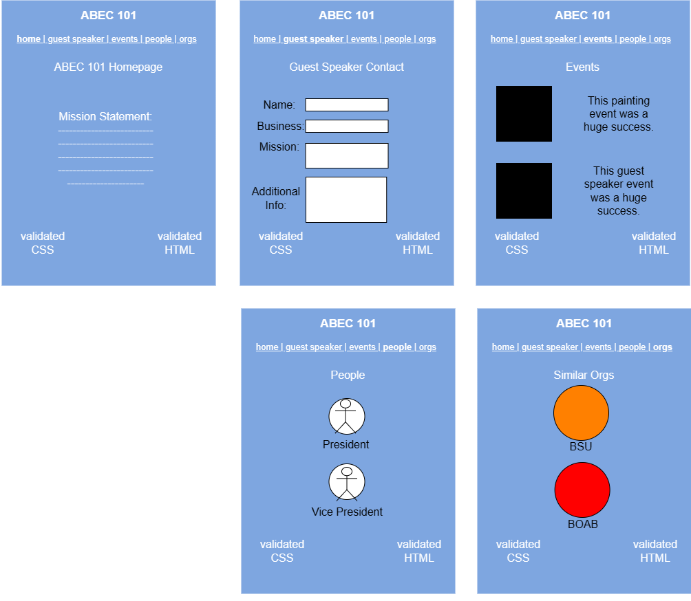
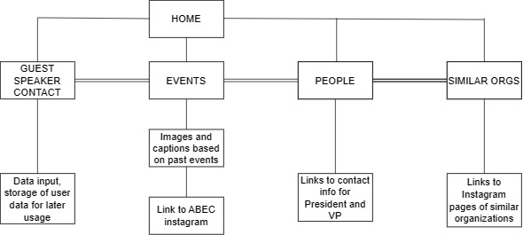

Client Project Overview
Project Overview
- This project is dedicated to improving the engagement of the student organization, ABEC on campus. It will aim to increase student involvement in the org events and increase guest speaker attendance
- Intended Users are UNCC Students, UNCC Faculty, Entrepreneurs, Artists/Creators
- Content: people, events, information about the organization, goal of the organization, gallery of photos.
- Interactivity: Guest speaker contact form
Client Information
- Name: Association of Black Entrepreneurs & Creators
- Affiliation: University of North Carolina at Charlotte
- Email: abecuncc@gmail.com
Wireframe
Sitemap
Page Design
- Home
- This page offers a general overview of ABEC and their Mission Statement.
- Contact
- This page allows individuals to input a message to the E-board of ABEC, as well as store their contact information for outreach and potential collaboration.
- Events
- This page shows the user ABEC's past events and links them to ABEC's instagram where they can stay up to date on upcoming events.
- People
- This page displays portraits of the President and Vice President of ABEC and their emails for contact.
- Similar Orgs
- This page displays the logos of similar organizations and lists their available contact information.
Dynamic Functionality
- Forms that allow potential guest speakers to leave their information regarding possible collab opportunities in the future
- This will be on the Guest Speaker Form page, I’m using a form because potential guest speakers will be able to reach out to the organization if they envision a collaboration in the future.
- Examples (Links)